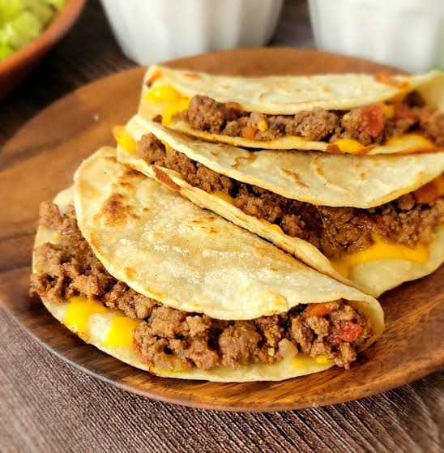

Taco

Description
Tacos are good.
Ingredients
- 1 lb ground beef (85/15 or 90/10 lean ratio)
- 2 tbsp taco seasoning mix
- 1/4 cup water
- 8 small corn or flour tortillas
- Shredded lettuce, diced tomatoes, shredded cheddar cheese, and salsa.
Steps
- Brown the meat: Cook the ground beef in a skillet over medium-high heat for 5 to 7 minutes until no longer pink. Drain any extra grease if needed.
- Season and simmer: Stir in the taco seasoning and water. Let it simmer on medium-low for 3 to 4 minutes until the sauce thickens.
- Warm the tortillas: Heat the tortillas in a dry skillet or microwave for 20 to 30 seconds until soft and flexible.
- Spoon the beef into each tortilla and add your choice of cheese, lettuce, and salsa.
Homepage